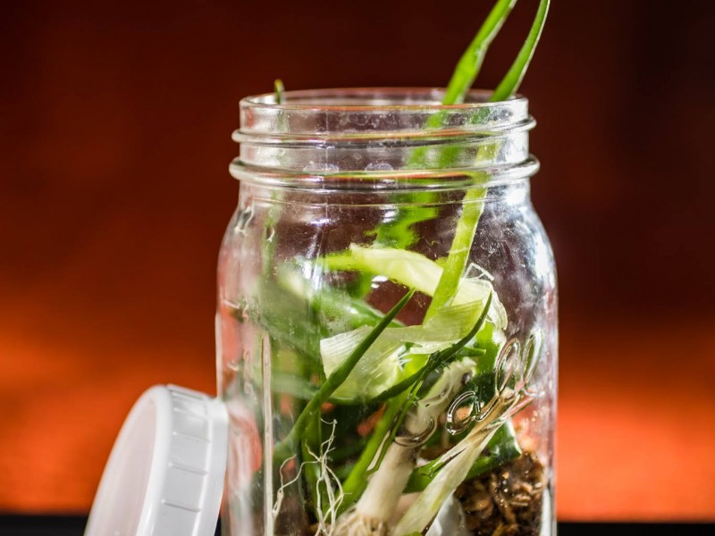

March 31, 2018
Kitchen Counter Composting

One of the simplest and quickest ways to reduce your greenhouse gas footprint is to compost your food scraps. According to the EPA, our scraps make up about 20-30% of what goes into U.S. landfills, where banana peels, wilted lettuce, and bread ends turn into mega methane generators. The EPA website even offers an easy guide to creating your own food-waste-based fertilizer at home.
But if you have no garden or yard on which to spread your converted compost, don’t fret! As Finley’s sister Callie learned—after three years of tossing scraps in the bin and piling up a guilty conscience—ethical food disposal can be as simple as a mason jar on your kitchen counter. Callie lives ten stories away from a patch of dirt. But every morning, she adds her tea leaves and egg shells to a mason jar. Every Sunday, she caps it off and totes it to the DuPont Circle farmer’s market food waste drop-off site. If the jar fills up too quickly, she empties it mid-week in the office compost bin. It’s a free, simple, and quick way to do your part for the planet!
Pro tip: Line the bottom of your jar with a bit of shredded newspaper to help absorb smells!
Photo: Callie’s mason jar food waste container — © Callie BroaddusMy Kitchen Counter Compost jar. I was amazed when I started throwing my food scraps in a mason jar about a year ago how quickly it filled up. I’ll never go back to throwing them in the bin!
For more info:
https://www.epa.gov/recycle/composting-home